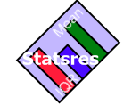

Statsres is a small software utility for calculating statistical measurements from a results dataset. The purpose of Statsres is to aid the user in the collection of these statistical measurements by calculating several measurements for a single dataset during a single run. Statsres's output can then be copied into any application for presentation or further analysis.
If you are new to Statsres, then please visit Getting Started from the topic lists on the left-hand side of the screen.
Otherwise, please visit the topic which you require help on from the left-hand side of the screen.
Statsres was originally developed by David A J Lee but is now open source software licensed under the GNU General Public License (GPL).